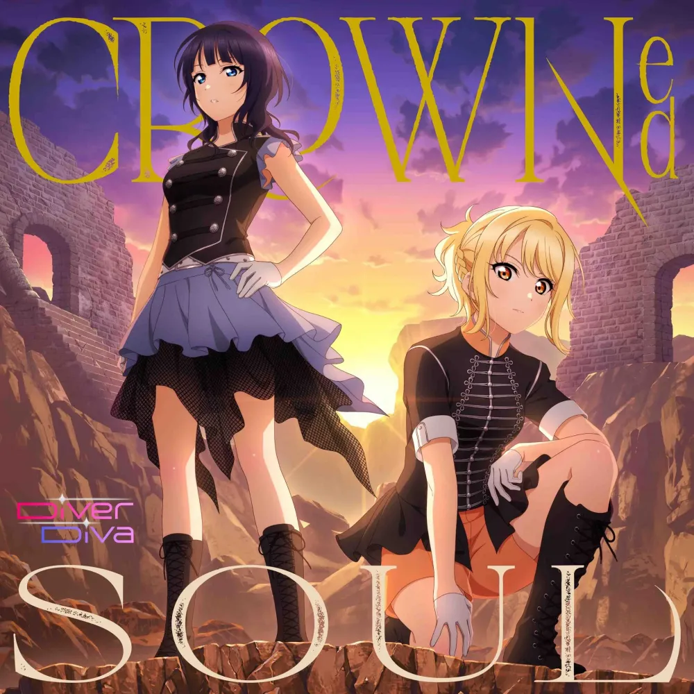

#fff,#fff DiverDiva
| |
 | |
#fff,#fff 3rd Single 《#fff,#fff Shadow Effect》
|
| ||||
데뷔일
| 2020년 2월 12일 (데뷔일로부터 [dday(2020-02-12)]일, [age(2020-02-12)]주년) | |||
데뷔 음반
| 2020년 2월 12일 > 틀 포함: 틀:음반 표시 | |||
최신 음반
| 2022년 10월 5일 > 틀 포함: 틀:음반 표시 | |||
장르
| J-POP, 팝 | |||
레이블
| 란티스 | |||
링크
|   | |||

1. 개요
니지가사키 학원 스쿨 아이돌 동호회의 2인 서브 유닛.유닛명은 '다이버 디바'라고 읽는다. 마음 속 깊은 곳까지 파고드는 「Diver」와 여가수를 의미하는 「Diva」가 이름의 유래다. 여기서 Diva는 니지가사키 학원 스쿨 아이돌 동호회의 무대인 오다이바에서 따 온 것이기도 하다. 팬들에게서 유닛명 모집을 받아 2019년 5월 30일 유닛명 최종 후보 발표 및 투표가 시작되었으며 동년 6월 28일 확정 발표되었다.
2. 멤버
DiverDiva의 멤버
| |
 |  |
| #fff,#fff 아사카 카린 | #fff,#fff 미야시타 아이 |
3. 특징
>카린과 아이의 성격이나 인상이 정반대라고 해도 될 정도로 달라서, 카린은 쿨하고 언니 같은 느낌, 아이는 밝고 기운 넘치는 느낌이라서, 정말로 달과 태양이라는 표현이 잘 와닿아요. 그리고, 이건 최근 깨달은 점인데요, 열심히 노력하면서 불타오르는 성격은 닮았을지도? 하고 생각이 들기 시작했습니다. 그런 정반대이면서 성실하고 열심히 하는 두 사람이기에 만들 수 있는 세계가 DiverDiva의 매력이라고 생각해요! >- 무라카미 나츠미>솔로 퍼포먼스의 매료 방법과는 정반대라서, 유닛으로서 두 사람이 함께라면, 서로가 가지고 있지 않은 장점을 각자 보충해주는 듯한 밸런스가 절묘해요.>- 쿠보타 미유 >
한편으로는 키 크고 어른스러운 인상의 독자 모델이지만 바보, 길치, 츤데레인 카린과 갸루처럼 생겼지만 의리 있고 할머니 손맛을 좋아하는 정겨운 캐릭터인 아이로 이루어진 갭 모에로 가득찬 유닛이기도 하다. 이 점 역시 DiverDiva의 아이덴티티.
4. 활동
4.1. 음반 목록
틀 포함: 틀:DiverDiva의 곡 일람
4.2. 그 외
캐스트 인터뷰, 당신과 오다이바! 니지동 데이트♡♡♡ 수록- 스페셜 드라마
| [youtube(vV5ZWJMOnm4)] |
- 캐스트 인터뷰 #
5. 기타

- 스쿠스타에서 중앙 3자리를 다이버디바 멤버 페스 카드로[1] 배치하면 위와 같은 컷인을 확인할 수 있다.

- 유닛 1집 구매 특전으로 스쿠스타에서 쿨 속성의 악세사리를 얻을 수 있다.
- 167cm인 카린과 163cm인 아이가 같은 유닛이 되면서 역대 유닛 중 평균 키가 1위다.[2]
- 노래 스타일은 주로 EDM을 내세우는 전작의 유닛들 BiBi, AZALEA, Guilty Kiss와 흡사하며 유닛의 추구하는 속성이 '쿨'인 것이 전작의 유닛들 BiBi, Guilty Kiss와 유사하다.
- 니지세컨에서 두 성우가 다이버디바의 의상을 입고 라이브를 했는데 팬들의 반응은 악당 여간부 둘이 서 있는 줄 알았다고 할 만큼 실제 의상이 예쁘게 뽑힌 편이다. 복부노출이 되는 부분을 아예 가렸음에도 미유땅과 낫짱이 의상을 입고 잘 소화해낸 것도 한몫하는 듯하다. 2nd 라이브에서의 SUPER NOVA 무대의 브릿지 부분에서 저스트 댄스를 연상케 하는 모션이 캐스트 뒤에 등장하여 같이 춤을 추는 묘사가 나왔는데 그 장면은 미유땅과 낫쨩이 직접 티셔츠를 입고 모션 캐치를 딴 것이라고 한다.
- 우연스럽게도 이 유닛에 컨셉이 같은 애니메이션 제작사인 선라이즈 작품 더티 페어에 오마쥬가 물씬 담겨 있다.
- 니지동 애니에서의 결성 과정은 아이가 카와모토 미사토와의 갈등[4]으로 더 이상 스쿨 아이돌을 하지 못할 것 같다는 고민에 대해 카린이 그럴 거면 자신이 아이의 팬들을 전부 자신의 팬으로 돌리겠다면서 아이의 스쿨 아이돌에 대한 열정을 부추기고 이에 아이가 서로 경쟁하며 성장하는 파트너 로서의 유닛을 만들자는 제안에 카린이 수락하는 형태로 나온다. 스쿠스타 2부에 비하면 선녀 같은 전개지만 다른 유닛에 비해 결성에 대한 서사가 부족하다고 느끼는 팬들이 있다.
하지만 관계자들이 행복하다면 괜찮다.